CacheSlide: Unlocking Cross Position-Aware KV Cache Reuse for Accelerating LLM Serving
总结
随着大语言模型（LLM）在基于智能体（agent）的应用中广泛部署，输入提示词结构日益复杂——由不变段（如系统提示、历史记忆）和动态更新段（如函数调用内容、推理步骤）交替组成。如何高效复用不变段的 KV cache 以避免重复计算，成为降低推理延迟的关键挑战。
As-is: 现有 KV cache 复用策略分为两类：位置依赖缓存（PDC，如 ContextCache、PromptCache）仅允许在固定绝对位置复用 KV cache，当动态段长度变化时，固定段位置发生偏移，PDC 只能复用前缀，效率受限；位置无关缓存（PIC，如 CacheBlend、EPIC）允许在任意位置复用，但将复用段的位置索引重置为零，导致缓存 KV 与实际推理时的 KV 之间存在"位置错配 KV 漂移"（PMKD）问题，引发精度下降。此外，PIC 方法在系统层面存在层内加载-写入串行化（load-before-write lock）和基于 LRU 的脏页驱逐问题，造成 I/O 瓶颈和写放大。窗口填充（window padding）方法虽能约束位置漂移，但会丢失关键信息或加剧 PMKD，实际场景中难以找到合适的窗口大小。
To-be: 论文提出了相对位置依赖缓存（RPDC）范式——复用段保持一致的相对顺序，但绝对位置可随动态段长度变化而滑动。基于此范式，论文设计了 CacheSlide 系统，包含三大核心组件：分块上下文位置编码（CCPE）通过基于 CoPE 的任务特定预训练增强缓存与重计算 KV 的位置编码相似度；加权校正注意力（WCA）仅对少量关键 token 重计算并按学习权重融合新旧 KV，高效恢复固定段与更新段之间的交叉注意力；SLIDE 实现层内加载-写入解耦和脏页感知驱逐，优化 SSD 访问延迟。实验表明，CacheSlide 相比最优基线实现 3.11–4.3× 延迟降低和 3.5–5.8× 吞吐量提升，且精度损失可忽略不计。
---
背景
智能体提示词结构与工作流
LLM 被日益集成到多智能体框架中，利用思维链推理、记忆增强推理和函数调用等技术，导致提示词结构更加动态和复杂。论文将每轮输入抽象为三部分：
- 系统提示（System prompt）：静态前缀，在会话开始时发送一次。
- 更新提示（Updated prompt）：每轮推理动态更新，包含当前推理步骤的最新反思、最近的记忆摘要或本轮所需的函数调用内容。
- 固定提示（Fixed prompt）：静态后缀，持久存储所有先前推理步骤的完整记录或累积的历史记忆。
每轮推理时，系统将这三部分拼接为完整提示词送入 LLM，即使大部分内容未变，也需对整个输入序列从头重新计算表示。由于 LLM 推理的计算开销主要由 prefill 阶段主导，频繁重计算不变段导致 TTFT（time-to-first-token）显著增加和资源浪费。
三类代表性智能体范式
论文总结了当前 LLM 智能体的三种主要范式：
1. 思维链智能体（如 Reflexion、Chain-of-Tools、Self-Refine）：每步认知推理作为更新提示组件，完整推理记录逐步累积到不断扩展的后缀中，每轮仅修改最小控制段。
2. 记忆中心智能体（如 MemGPT、MemoryGPT）：采用持久系统前缀和可控工作上下文缓冲区，通过 FIFO 结构顺序追加新对话交互，保持所有先前累积内容不变。
3. 工具增强提示框架（如 OpenAI Function Calling、AutoGen、SWE-Agent）：使用不变系统指令前缀和历史消息后缀，每轮动态注入函数调用规范作为可变提示组件。
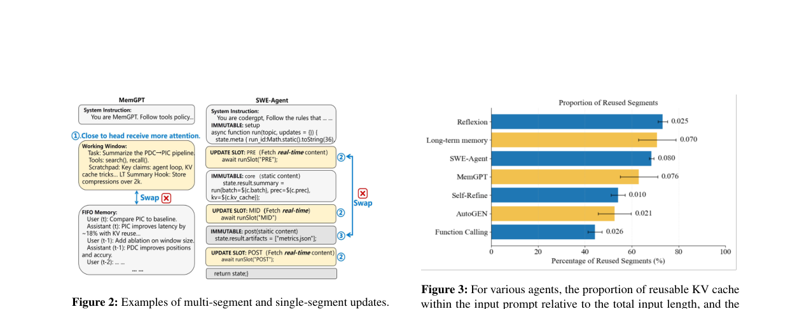
如图 2 所示，MemGPT 和 SWE-agent 的典型提示词设计展示了多段和单段更新模式，将系统指令、FIFO 记忆工作窗口和更新槽与不可变段交错排列。
KV cache 复用的可重用性分析
论文分析了各类智能体中可复用 KV cache 的比例。如图 3 所示，在 Reflexion、MemGPT 和 SWE-Agent 中，输入提示词中可复用 KV cache 占总输入长度的比例很高，且该比例在不同轮次间存在波动。
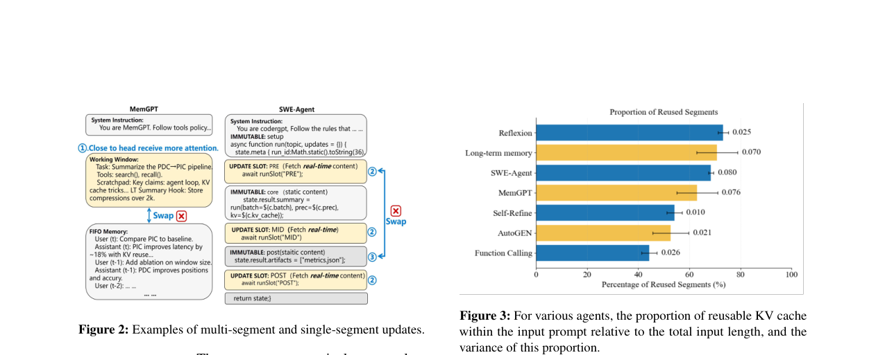
现有 KV cache 复用方法
现有方法按位置依赖性分为两类：
位置依赖缓存（PDC）：以 ContextCache 和 PromptCache 为代表。ContextCache 跨请求复用公共前缀序列的 KV 值，仅计算非前缀 token 的 KV。PromptCache 扩展此概念，允许在不同请求中一致位置出现的相同内容段复用，通过为共享段分配虚拟前缀提供适当位置嵌入。但若相同内容出现在不同位置，PromptCache 需生成和维护多个位置特定的 KV cache 表示，引入大量存储开销。
位置无关缓存（PIC）：以 CacheBlend 和 EPIC 为代表。两者为可复用上下文段生成位置无关编码，将所有 KV cache 的位置索引从零开始初始化。CacheBlend 在 prefill 阶段先在浅层（如第 1-3 层）重计算整个提示词，与缓存 KV 状态比较，选择差异最大的固定比例（如 18%）token 进行 KV 重计算。EPIC 则仅重计算每个缓存块的边界 token（前 32 和后 32，共 64 个 token/块）。
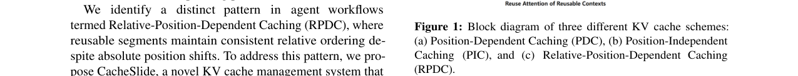
位置编码敏感性
论文分析了两种广泛使用的位置编码的敏感性：
- RoPE（高位置敏感性）：将每个绝对索引 p 映射到位置相关旋转，位置 p 和 q 之间的注意力取决于相位差 ∝(p−q)，每个 token 分配唯一位置。即使小的绝对偏移也会均匀改变 token 相位，改变感知的相对距离和注意力。
- CoPE（低位置敏感性）：按语义边界而非单个 token 索引——相邻 token 可共享索引。当相同文本段出现在不同位置时，这种基于边界的方案扰动更少索引，在相同绝对偏移下有效位置变化更小。
---
问题
PDC 的局限性
PDC 方法假设可复用段具有固定绝对位置。当更新段长度变化时，ContextCache 只能复用相同的提示词前缀。虽然可以考虑重排段以最大化前缀共享，但如图 2 ❶所示，固定段和更新段不能简单交换：
- 在 MemGPT 中，最近记忆（Working Window）需靠近头部以获得更多注意力，不能与 FIFO 历史内容交换。
- 在 SWE-agent 中，更新槽不能与不可变段交换（图 2 ❷❸），因为这种重排会改变程序语义并破坏数据依赖（例如，若 Updated Slot 1 产生一个运行时参数供 Immutable 1 消费，将槽移到后缀会阻止 Immutable 1 接收该参数）。
PromptCache 虽然允许在一致位置复用相同内容段，但必须为每个段隔离预计算和存储 KV cache（仅捕获段内注意力），复用时不恢复段间或段与更新段之间的交叉注意力，导致 KV cache 版本激增和大量存储开销。
PIC 的局限性
PIC 方法将复用段的起始索引重置为零，导致缓存 KV 与在实际输入位置从头重计算的 KV 之间存在位置/注意力错配。为部分恢复精度，这些方法预选 token 子集进行重计算。但在 Transformer 的多头注意力中，不同头关注不同 token，模型输出融合各头结果。由于哪些 token 最影响输出只有在解码阶段才清楚，prefill 阶段的 token 子集预选无法确保稳定精度。
系统级低效
从系统角度看，PIC 的实现需要在每层加载 KV cache 并写入重计算 token 的 KV。然而主流 LLM 推理框架（vLLM、SGLang、TensorRT-LLM）在每层串行化 KV cache 加载和写入，导致层内 load-before-write 锁，消除层内重叠，在 prefill 关键路径上产生 I/O 瓶颈。
当容量压力迫使 KV cache 页面溢出到 SSD 时，当前系统通常通过 LRU 而非脏页感知方案驱逐 KV 块。部分更新的页面在驱逐时产生随机写入和更高的写放大因子（WAF）。缺乏脏页感知驱逐或写合并，这些 I/O 开销传播到 prefill 路径，加剧 I/O 瓶颈和尾延迟。
PMKD 的量化分析
论文定义了位置错配 KV 漂移（PMKD）：当段位置在不同请求间变化时，由位置编码差异导致的 KV cache 相似度差异。使用 CKSim（余弦相似度）度量，在 ShareGPT 数据集上用 MemGPT 进行实验：
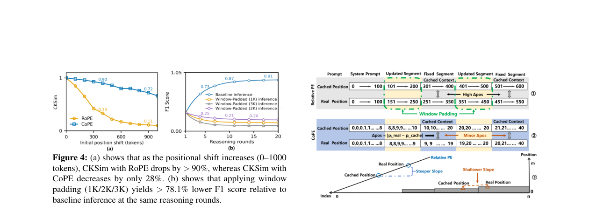
如图 4(a) 所示，随着位置偏移增加（0–1000 token），使用 RoPE 的 CKSim 下降超过 90%，而使用 CoPE 的 CKSim 仅下降 28%。这证实了 PMKD 的显著性及其编码依赖性。
图 5 进一步揭示了这一现象：当更新段长度变化时，固定段的真实位置索引与缓存中的位置索引可能大幅偏离（如 RoPE 下缓存位置为 101 和 401，而真实位置变为 251 和 451）。在相同更新长度下，CoPE 显著减少了固定段的位置偏移（如偏移 ∆pos 从 (10, 21) 变为 (9, 20)）。
窗口填充的局限性
为约束位置漂移，一种自然方法是通过窗口填充策略固定更新段长度。但实验表明（图 4(b)），使用 MemGPT 将工作窗口固定为 1K、2K 和 3K token，经过多轮推理后，窗口填充推理的 F1 分数比基线推理低超过 78.1%。固定长度更新段会导致关键信息丢失（工作窗口=1K）或更大的 PMKD（工作窗口=3K）。在真实场景中，多智能体输入中更新段的 token 数量波动大且不可预测，难以找到合适的窗口大小。
---
解决方案
论文提出了相对位置依赖缓存（RPDC）范式：复用段保持一致的相对顺序（任意重排会导致显著退化），但段之间的动态段持续更新导致绝对位置滑动。RPDC 同时解决了 PDC 的位置不灵活和 PIC 的注意力错配问题。
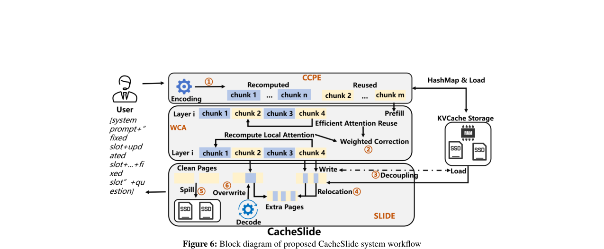
CacheSlide 系统由三个核心组件构成：CCPE 编码模块、加权校正注意力（WCA）模块和 SLIDE KV cache 管理模块。
分块上下文位置编码（CCPE）
CCPE 的目标是减少缓存与重计算 KV 之间的位置错配。具体设计如下：
1. 任务特定预训练：由于智能体场景中 KV cache 复用主要发生在单任务模式下（如同一问题的多轮推理或与单个用户的多轮交互），CCPE 对一类任务进行基于 CoPE 的预训练，通过直方图识别最频繁出现的编码模式 e*。
2. 分块角色分配：根据智能体提示词模板将提示词分为 K 个有序块，标记为复用块或重计算块。
3. Prefill 处理：对复用块，通过哈希表查找 KV cache，若找到则加载，否则使用预训练的 e* 编码进行 prefill 并存储；对重计算块，使用当前输入的 CoPE 编码分配位置编码。
如图 7 所示，通过预训练捕获最频繁的编码模式，在多轮推理中，缓存位置索引范围为 10 到 20，而实际推理中的范围为 9 到 21 或 10 到 20，使得每个 token 的缓存位置编码与实际推理位置编码之间的差异 ∆pos 可忽略不计，从而最大化固定段的 CKSim。
加权校正注意力（WCA）
CCPE 高效对齐了固定段的位置编码，使得固定段的段内注意力和固定段之间的交叉注意力可以近无损复用。但恢复固定段与更新段之间的交叉注意力仍具挑战。WCA 基于一个关键观察：相邻层的 KV 表现出相似性，且相似性随层深度增加而增大。
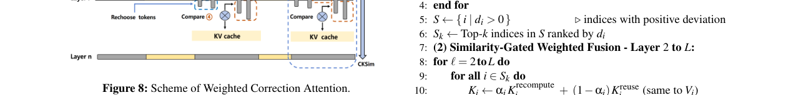
WCA 分为两个阶段：
阶段一：Top-k token 选择。在第 1 层对所有段重计算 KV。对每个 token i 计算平方偏差 $d_i = \|K_i^{recompute} - K_i^{reuse}\|^2$，收集偏差大于零的 token 索引集合 S，按偏差降序排列选取 top-k token 形成集合 $S_k$（图 8 ❶❷）。
阶段二：相似度门控加权融合。对每个层 $\ell > 1$，仅对 $S_k$ 中的 token 重计算 KV，按偏差感知权重 $\alpha_i$ 融合重计算和缓存 KV（图 8 ❸）：
$$K_i \leftarrow \alpha_i K_i^{recompute} + (1-\alpha_i) K_i^{reuse}$$
其中 $\alpha_i = \frac{\|K_i^{recompute} - K_i^{reuse}\|^2}{\|K_i^{reuse}\|^2}$。
每四层进行一次 CKSim 门控检查：若 token j 的 CKSim 低于阈值 τ（表示已充分收敛），则将 j 从 $S_k$ 移除，并从 $S \setminus S_k$ 中提升偏差最大的 token m 进入 $S_k$（图 8 ❹）。论文建议最优参数为 CKSim 阈值 0.12、top-k 比例 0.26。
这一设计的核心原理是：一旦 token i 的重计算 KV 与缓存 KV 之间的偏差变得可忽略，层间相似性意味着后续层中 token i 的 KV 与真实 KV 的偏差同样可忽略，因此可以转向恢复其他 token。
SLIDE：KV cache 管理器
WCA 需要逐层加载 KV cache 并更新所选 token 的 KV，引入了与 PIC 类似的系统级问题。SLIDE（Spill-aware & Load–write decoupling Intra-layer & Dirty-page Eviction）通过三个机制解决这些问题：
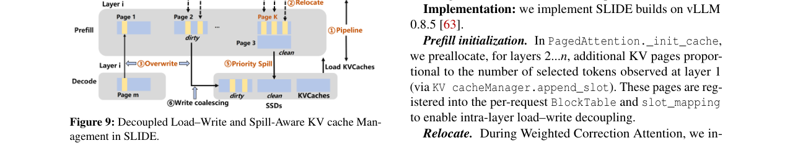
1. 层内加载-写入解耦：在层 i 开始时，SLIDE 启动重计算的同时流水线式加载层 i 的 KV cache。若重计算先于加载完成，将所选 token 的 KV 写入新分配的页面（如页面 K）而非阻塞等待加载（图 9 ❶❷）。在解码阶段，优先将 KV 覆盖写入所选 token 的原始 KV cache 槽位，然后正常分配新页面（图 9 ❸）。反之，若 KV cache 加载先完成，则直接将所选 token 的 KV 写入更新的槽映射（图 9 ❹）。
2. 脏页标记：从第 2 层起，若页面包含 WCA 中的所选 token 则标记为脏页，否则为干净页。对每个脏页维护所选 token 计数器。
3. 脏页感知驱逐：当存储受限时 KV cache 溢出到 SSD。SLIDE 优先驱逐干净页，然后按所选 token 计数降序排列脏页并驱逐（图 9 ❺❻）。优先驱逐干净页防止脏页上的碎片化写回（所选 token 不保证聚集在固定页面），按所选 token 计数排序促进写合并，减少随机写入和 WAF。
SLIDE 基于 vLLM 0.8.5 实现。在 `PagedAttention._init_cache` 中为第 2...n 层预分配与第 1 层观察到的所选 token 数量成比例的额外 KV 页面，注册到每请求的 BlockTable 和 slot_mapping 中。重定位阶段通过 `KV cacheManager.promote` 将所选 token 的 KV 写入新分配页面并更新 block_tables 和 slot_mapping。覆写阶段复用这些 block_tables 进行原地写入，直到可用槽耗尽再分配新页面。
---
测试结果
实验设置
硬件：单卡 NVIDIA A100（80GB HBM），70B 模型使用双卡 A100；主机配备 500GB DRAM、2TB NVMe SSD 和 PCIe Gen 4 GPU 互连，运行 Ubuntu 20.04、Linux 内核 5.16.7、CUDA 12.6。
数据集：
- HotPotQA：113K Wikipedia 多跳问答集，用于评估 CoT 提示词（如 Reflexion）。
- Multi-Session Chat：约 10K 多会话对话语料，每个由人类标注员以一致角色跨五个会话编写。
- SWE-Agent-Bench：2 任务、12 仓库的 Python 基准测试，用于复现失败测试并修补使其通过。
模型：Mistral-7B、MPT-30B 和 Llama-3 70B，代表不同架构、规模和训练方法。通过基于适配器的持续预训练实现 CoPE 支持，保留所有骨干权重并学习 LoRA 适配器，实现向后兼容的双栈设计。
基线：
- ContextCache（PDC）：仅复用系统提示 KV cache，使用 Kimi Context Caching 实现。
- PromptCache（PDC）：为固定段预计算所有位置的 KV cache，使用 OpenAI Prompt Caching 实现。
- CacheBlend（PIC）：将系统提示和固定段作为独立段，重计算 18% token，使用 LMCache 实现。
- EPIC（PIC）：CacheBlend 式分区，每固定段重计算 32 个边界 token，通过 LMCache 实现。
智能体：Reflexion（思维链推理）、MemGPT（记忆管理）、SWE-Agent（外部工具使用与多段更新）。
指标：TTFT（首 token 延迟）、Rouge-L recall、Success Rate、F1 Score。
精度-TTFT 权衡
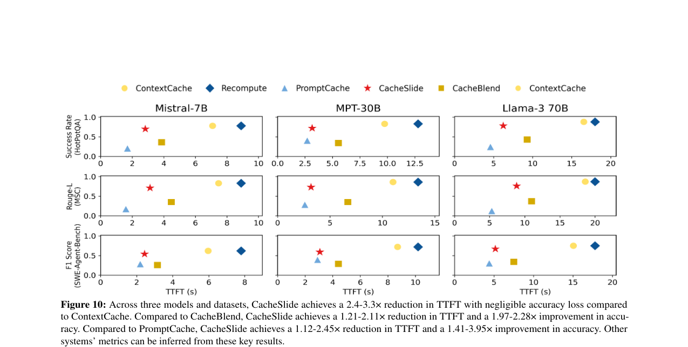
如图 10 所示，在三个模型和三个数据集上，CacheSlide 始终位于帕累托前沿：
- 相比 ContextCache，CacheSlide 实现 2.4–3.3× 的 TTFT 降低，精度损失可忽略不计。
- 相比 CacheBlend，CacheSlide 实现 1.21–2.11× 的 TTFT 降低和 1.97–2.28× 的精度提升。
- 相比 PromptCache，CacheSlide 实现 1.12–2.45× 的 TTFT 降低和 1.41–3.95× 的精度提升。
极快系统（EPIC、PromptCache、CacheBlend）精度损失显著，而优先保证输出质量的方法（Recompute、ContextCache）虽精度最高但 TTFT 大幅增加。CacheSlide 的优势来源于：CCPE 高效复用固定段间注意力，WCA 有效恢复固定段与更新段间注意力，SLIDE 解耦加载与重计算并实现脏页感知驱逐。
并行推理与束搜索
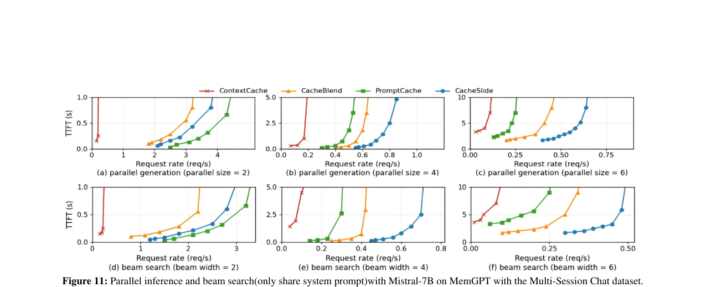
在 Mistral-7B 上使用 MemGPT 和 Multi-Session Chat 数据集评估并行推理（batch size = 2/4/6，仅共享系统提示 KV cache）和束搜索场景：
- 并行推理中，随着序列数增加，CacheSlide 的 TTFT 增幅小于基线。相比其他最优基线，改善从 batch size 2 的 1.2× 提升到 batch size 6 的 2.3×。
- 随 batch size 增大，更多 KV cache 溢出到 SSD：PromptCache 因存储占用最大溢出最严重，CacheBlend 也出现退化，而 SLIDE 优化了溢出 KV cache 的管理。
- 在束搜索场景下，CacheSlide 同样展现出优势，因为 SLIDE 的脏页感知驱逐和写合并机制有效缓解了存储压力。
SLIDE 组件效果
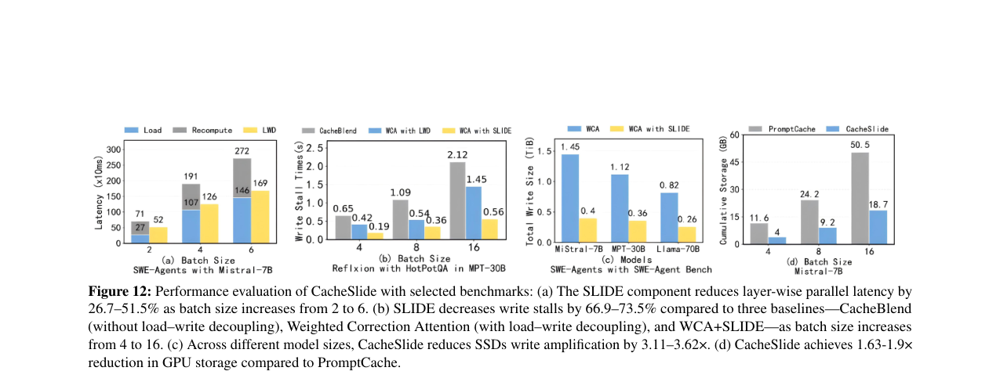
图 12(a) 显示，SLIDE 组件将逐层并行延迟降低 26.7–51.5%（随 batch size 增大效果更显著），验证了层内加载-写入解耦的有效性。脏页感知驱逐策略在 SSD 溢出场景下显著减少了写放大和随机写入开销。
吞吐量效率
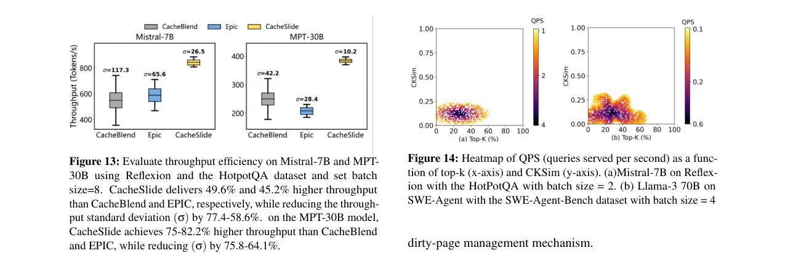
在 Mistral-7B 和 MPT-30B 上使用 Reflexion 和 HotPotQA 数据集（batch size=8）评估吞吐量。CacheSlide 分别实现 49.6% 和更高比例的吞吐量提升。综合所有实验，CacheSlide 相比最优基线实现 3.11–4.3× 延迟降低和 3.5–5.8× 吞吐量提升。
参数敏感性分析
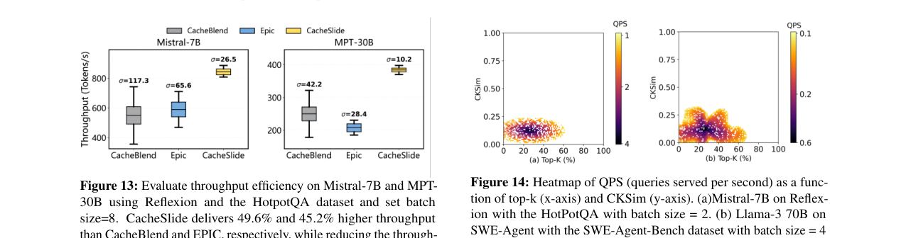
图 14 展示了 QPS（每秒查询数）作为 top-k 比例（x 轴）和 CKSim 阈值（y 轴）函数的热力图。在 Mistral-7B 上使用 Reflexion 和 HotPotQA（batch size=8）评估。论文建议最优参数为 CKSim 阈值 0.12、top-k 比例 0.26，在此配置下 QPS 达到峰值，同时保持精度损失可忽略。
局限性
论文未深入讨论以下方面的局限：
- CCPE 的任务特定预训练需要针对每类任务收集训练数据并预训练编码模式，对于新型任务或跨任务场景的泛化能力未充分评估。
- CoPE 支持通过 LoRA 适配器实现，虽然保留了原始模型权重，但适配器引入的额外参数和推理开销未详细量化。
- 实验主要在单卡/双卡 A100 上进行，更大规模分布式部署下的扩展性未验证。
- SLIDE 的脏页感知驱逐策略在极端存储压力下的退化行为未充分探讨。